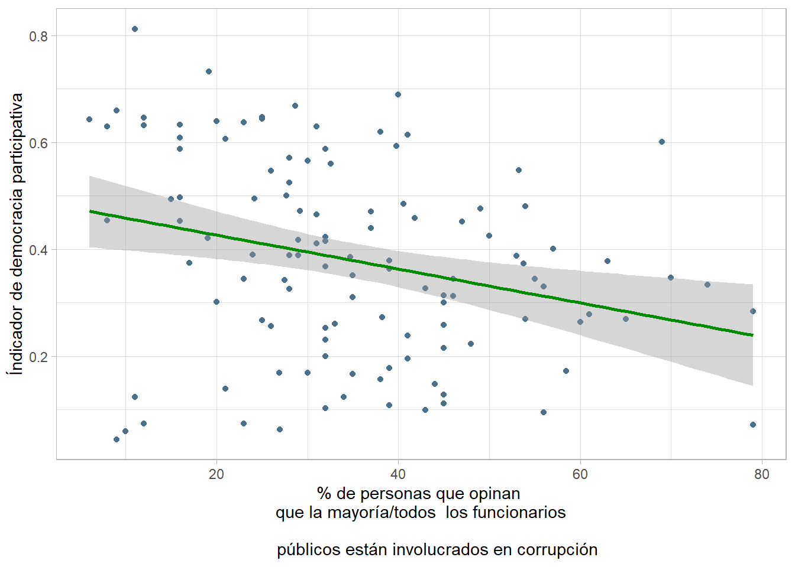

Práctica dirigida 10

I. Análisis de regresión simple: ideas clave
Técnica estadística que predice el valor de una variable con los valores de otra. La regresión lineal simple es un método útil para predecir una respuesta cuantitativa Y partiendo de una sola variable predictora X, asumiendo que hay una relación aproximadamente lineal entre X e Y. Matemáticamente, esta relación lineal se representa como
Y = a + bX + E
Y = variable dependiente o explicada. Variable cuyos valores se desea predecir o resumir. Un modelo de regresión lineal tiene como variable dependiente una variable numérica
a = Constante: ordenada en el origen, valor esperado de “Y” cuando X=0
b = Pendiente: mide el cambio de la variable “Y” por cada unidad de cambio de “X”. Su magnitud sirve para predecir en cuánto aumentará “y” cada vez que “x” se incremente en una unidad.Su signo puede ser positivo o negativo, y en esto la interpretación coincide con la correlación.
X = variable utilizada para predecir el valor de la variable dependiente. También se denomina variable predictora o variable explicativa. Las variables explicativas que son parte del modelo suelen ser numéricas o intervalares; sin embargo, es posible incorporar variables explicativas ordinales o categóricas.
E = Corresponde a las desviaciones de los valores verdaderos de Y con respecto a los valores esperados de “Y” (diferencia entre lo observado y estimado por el modelo). Asumimos que es independiente de “X”.
La relación entre las variables depende de la pendiente:
Si b es positivo, Y aumenta cuando X aumenta. Es una relación directa / positiva.
Si b es negativo, Y aumenta cuando X disminuye. Es una relación inversa / negativa.
Si b es cero.Y no cambia cuando X varía. No existe relación entre las variables.
Asimismo, con el método de la regresión lineal se puede responder las siguientes preguntas:
Analizar si hay una asociación entre las variables mediante un test de independencia estadística.
Analizar la dirección de la asociación (directa o inversa).
Evaluar la fuerza de la asociación usando una medida de asociación llamada correlación de Pearson.
Estimar una ecuación de regresión que “predice” los valores de la variable dependiente para valores de la variable independiente.
II. Aplicación práctica
Para la sesión de hoy trabajaremos con datos del 2017 de una base de datos que contiene variables obtenidas de las siguientes bases: - Freedom in the World - V-Dem - Democracy Index - Global Corruption Barometer
Información sobre las bases: - Freedom in the World es elaborado por Freedom House y analiza los siguientes aspectos: el proceso electoral, las políticas pluriculturales y la participación, el funcionamiento del gobierno, la libertad de expresión y de creencia, los derechos de asociación y organización, el estado de derecho, la autonomía personal y los derechos individuales.
V-Dem es publicada por el V-Dem Institute. En ella se describe la calidad de los gobiernos a partir de información de 542 indicadores. La sata describe todos los aspectos de un gobierno, brindándo énfasis en la calidad de la democracia, la inclusividad y otros indicadores económicos.
Democracy Index es elaborado por The Economist y utiliza 60 indicadores, agrupados en cinco categorías: proceso electoral y pluralismo, libertades civiles, funcionamiento del gobierno, participación política y política cultural. A partir de estas categorías posiciona a los países en alguno de los cuatro tipos de régimen: Democracia plena, democracia imperfecta, régimen híbrido y régimen autoritario.
Global Corruption Barometer es publicado por Transparencia Internacional y contiene información proveniente de la opinión pública ciudadana
library(rio)
data=import("corrupcion-democracia-1.xlsx")Ejercicio 1: Impacto del índice de democracia participativa en % de personas que personas que opinan que la mayoría de autoridades están implicada en corrupción por país
Las variables que utilizaremos serán:
Q2c = Porcentaje de personas que opinan que la mayoría o todos los funcionarios del gobierno están envueltos en corrupción
Part = Indicador de democracia participativa - Vdem
Gráfico de dispersión:
¿El indicador de democracia participativa tiene un impacto en el porcentaje de personas que opinan que la mayoría/todos los funcionarios están envueltos en corrupción?
Elaboramos el gráfico de dispersión y la recta
library(dplyr)
library(ggplot2)
data %>%
ggplot(aes (x=Q2c*100, y=Part)) +
geom_point(colour="lightsteelblue4") +
xlab("% de personas que opinan \n que la mayoría/todos los funcionarios \n
públicos están involucrados en corrupción") +
ylab("Índicador de democracia participativa")+ theme_light() +
geom_smooth(method="lm", se = T, colour="grey5")
A primera vista parece haber un leve impacto, y la relación entre nuestras variables se perfila como negativa. Comprobémoslo …
Creación del modelo
modelo1=lm(Part~Q2c,data=data)
summary(modelo1)##
## Call:
## lm(formula = Part ~ Q2c, data = data)
##
## Residuals:
## Min 1Q Median 3Q Max
## -0.41744 -0.12712 0.00909 0.13936 0.35691
##
## Coefficients:
## Estimate Std. Error t value Pr(>|t|)
## (Intercept) 0.49004 0.03944 12.425 < 2e-16 ***
## Q2c -0.31779 0.10258 -3.098 0.00245 **
## ---
## Signif. codes: 0 '***' 0.001 '**' 0.01 '*' 0.05 '.' 0.1 ' ' 1
##
## Residual standard error: 0.1768 on 114 degrees of freedom
## (2 observations deleted due to missingness)
## Multiple R-squared: 0.07765, Adjusted R-squared: 0.06956
## F-statistic: 9.598 on 1 and 114 DF, p-value: 0.002453Interpretación
¿El porcentaje de personas que creen que los funcionarios son corruptos influyen en el indicador de democracia participativa?
Para interpretar los resultados del modelo debemos tener presente lo siguiente:
Primero: p-value
Sabremos si la variable independiente impacta en la dependiente al revisar la significancia del p valor.
Establezcamos nuestras hipótesis:
H0: El modelo de regresión no es válido
H1: El modelo de regresión es válido (variable X aporta al modelo)
Como el p valor es 0.002453, entonces podemos afirmar que hay suficiente evidencia para rechazar la H0, por lo que concluimos que el modelo sí es válido como modelo de predicción. Es decir, podemos decir que hay evidencia estadística suficiente para afirmar que existe una relación significativa entre el índice de democracia participativa y la percepción de funcionarios corruptos por país.
En otras palabras, podemos decir que la percepción de funcionarios corruptos del país sí influye en el puntaje obtenido en el índice de democracia participativa.
Segundo: pendiente/b
Explica cómo es el efecto de x en y. Para ello analizamos el valor del parámetro de la pendiente.
En este caso, al ser este valor -0.31779, concluímos que cada vez que el valor de la percepción de corrupción en el país aumenta en 1, el puntaje del índice de democracia participativa disminuye en 0.318. Es decir, tenemos una relación inversa o negativa.
Tercero: R2
Analizar cuánto de la variabilidad de la variable dependiente (y) es explicada por la variable independiente (x), para ello revisamor el R2 (Multiple R-squared). Los valores van de 0 a 1. Mientras más cercano esté el R2 a 1, mayor será la variabilidad explicada. El R2 es un indicador de ajuste del modelo.
En nuestro modelo, este arrojó el valor de 0.07765, por lo que podemos concluir que aproximadamente el 7.8% (0.07765*100)de la variabilidad en el índice de democracia participativa puede ser explicado porel porcentaje de personas que opinan que la mayoría/todos los funcionarios están envueltos en corrupción.
Esto quiere decir que la cantidad de variabilidad explicada es relativamente baja. Por lo que podemos afirmar que hay otros factores más importantes o complejos que afectan la percepción de corrupción en cada país.
Cuarto: Ecuación de la recta
Hallar la ecuación de la recta del modelo. Para lograrlo, revisemos los dos valores de la tabla que se encuentran en la columna de “Estimate”, el valor de la primera fila es el del intercepto (a) y el de la segunda es el de la pendiente (b).
Del segundo paso, ya conocíamos que el valor de la pendiente es -0.31779. Si volvemos a revisar nuestra tabla podemos observar que en el cruce de Estimate e Intercept está el valor de 0.49004, este sería nuestro intercepto. Ahora, armemos nuestra ecuación de la recta:
Ŷ = 0.49004 - 0.31779∗X
Donde:
- X = Porcentaje de personas que opinan que la mayoría o todos los funcionarios del gobierno están envueltos en corrupción - (independiente)
- Y = Indicador de democracia participativa - (dependiente)
¿Qué se quiere saber?: Queremos saber si el % de personas que opinan que los funcionarios son corruptos influye en el indicador de democracia participativa.
Esa ecuación crea una línea recta en el diagrama de dispersión que representa la relación entre ambas variables y además indica que el cambio esperado en nuestra variable dependiente (Porcentaje de personas que opinan que la mayoría o todos los funcionarios del gobierno están envueltos en corrupción) por cada cambio de una unidad en nuestra variable independiente (Indicador de democracia participativa). Así, con esta ecuación se puede estimar el valor de Y para cualquier valor de X.
También podemos obtener los coeficientes de intercepción/intercepto y pendiente de la siguiente forma:
modelo1$coefficients## (Intercept) Q2c
## 0.4900430 -0.3177901Quinto: Predecir
Podemos utilizar la relación linear establecida por la ecuación para estimar el valor de la variable dependiente (Y) para un valor dado de la variable independiente (X).
Por ejemplo, si queremos calcular el valor de porcentaje de personas que opinan que la mayoría/todos los funcionarios están envueltos en corrupción cuando el índice de democracia participativa (0 a 1) es 0.4, solo tenemos que reemplazar el valor de x por 0.4 en nuestra ecuación.
Sustituyendo el valor de “x” en la ecuación, tenemos:
Ŷ = 0.49004 - 0.31779 * 0.4
Ŷ = 0.49004 - 0.12712
Ŷ = 0.36292
Por lo tanto, utilizando la ecuación de la recta, cuando el índice de democracia participativa es 0.4 , podemos predecir que aproximadamente el 36.2% de las personas opinan que la mayoría/todos los funcionarios están envueltos en corrupción en ese país.
Practica resolviendo los siguientes ejercicios
Ejercicio 2: Impacto de la puntuación de libertad en el % de personas que opinan que el nivel de corrupción disminuyó en el país
Ejercicio 3: Impacto del % de personas que están de acuerdo con la frase “Denunciaría un caso de corrupción aunque tuviera que pasar un día en el juzgado para declarar” en el % de personas que está de acuerdo con que los ciudadanos de a pie creen que pueden hacer la diferencia en la lucha contra la corrupción en el país